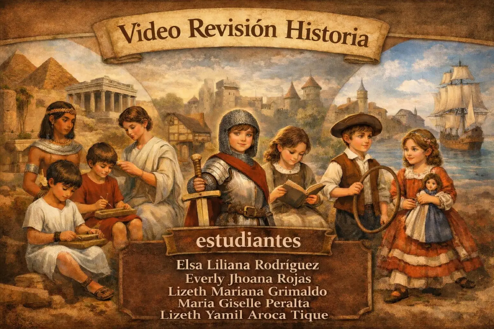

CORTE 1
En este escenario abordamos la concepción de la infancia durante las primeras civilizaciones y la época medieval. Durante mucho tiempo, el niño fue considerado un "adulto en miniatura", careciendo de un estatus propio o necesidades diferenciadas. Analizaremos cómo las estructuras familiares y sociales de la época moldearon esta visión y las implicaciones que tuvo para el trato, la cultura y la educación hacia los más pequeños.
| 1. Matriz De Revisión Histórica | |||||
|---|---|---|---|---|---|
| 2. Etapa Histórica | 3. Fecha | 4. Concepciones De Niño, Niña, Niñez E Infancia Principales Autores | 5. Contexto Social. | 6. Contexto Cultural | 7. Nombre Del Estudiante Responsable |
| 8. Edad Antigua | Siglo V a.C – Siglo V d.C | El niño era considerado un adulto pequeño sin reconocimiento de necesidades propias. (Enesco, Ariès) | Sociedades jerárquicas y esclavistas. Alta mortalidad infantil | Predominio de autoridad familiar y formación para trabajo o guerra | Elsa Liliana Rodríguez Cortes |
| 9. Edad Antigua | Siglo XXX AC – Siglo V D.C | Históricamente, no se valoraba la infancia como una etapa especial; los niños eran vistos como "adultos en miniatura". Por ello, se le integraba prematuramente a la vida adulta: los hombres al trabajo o al ejército, y las mujeres al matrimonio y la crianza. (Philippe Aries.) | Bajo un sistema esclavista, la infancia carecía de reconocimiento propio. La vida de los niños estaba definida por una alta mortalidad, la integración temprana al trabajo y una cultura que no los diferenciaba de los adultos. | En el arte y la cultura, los niños carecían de identidad propia. Se les representaba como adultos en miniatura, omitiendo deliberadamente sus rasgos naturales de inocencia y dependencia. | María Giselle Peralta Méndez |
| 10. Edad Media | Siglo V – XV | No existía diferenciación clara entre infancia y adultez (Ariès). | La sociedad era feudal, jerárquica y profundamente religiosa. Alta mortalidad infantil. | La Iglesia dominaba la educación bajo una visión moralista, donde el niño era visto como un ser inclinado al pecado. Por ello, su crianza se centraba en corregir su conducta mediante una disciplina rigurosa | Ereverly Jhoana Rojas Navarro |
| 11. Edad Media | Baja Edad Media | Niños integrados tempranamente al trabajo | Economía agrícola | Educación religiosa predominante. | Lizeth Yamil Aroca Tique |
| 12. Edad Moderna | Siglo XVII - XVIII | Surgimiento del "sentimiento de la infancia" y del "mimo" familiar. El niño es visto como un ser inacabado que requiere protección y formación moral (Ariès, 1987). Rousseau propone que el niño es bueno por naturaleza (citado en Enesco, s.f.). | Consolidación de la familia nuclear e inicio de la escolarización, obligatoria como método de disciplina y control social (Ariès, 1987). | Representación del niño con rasgos físicos propios en el arte. Aparece vestimenta específica que lo diferencia del adulto (Ariès, 1987). | Lizeth Mariana Grimaldo Caviedes |
Análisis audiovisual que expone la evolución histórica de las infancias, contrastando los conceptos, características y contextos socio-culturales desde la Edad Antigua y Media hasta la Modernidad.

Haz clic en la imagen para ver el material audiovisual en Canva.